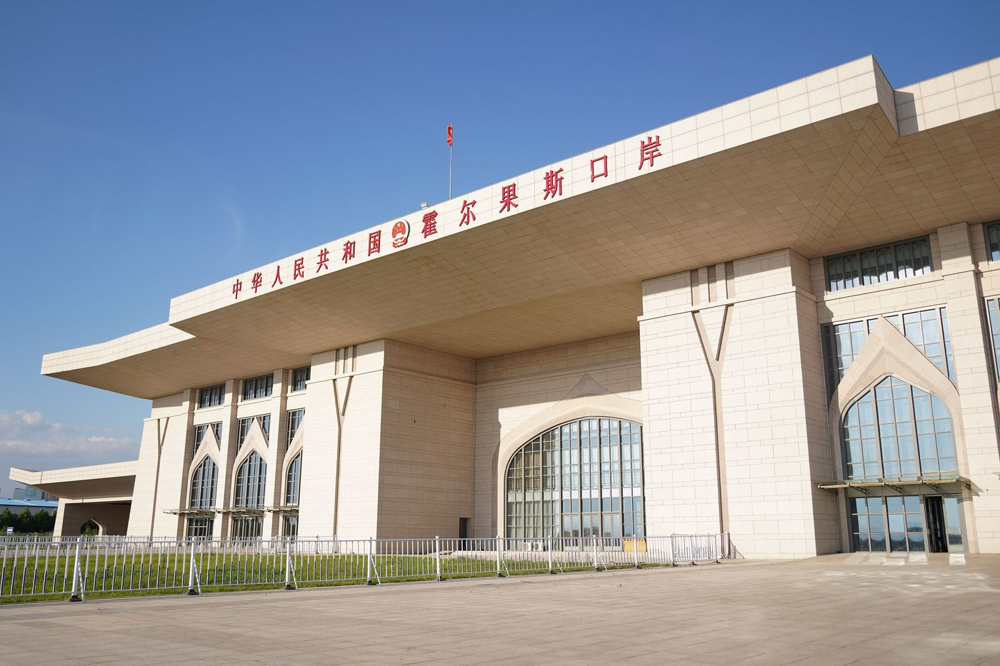

Counted Twice: China's Trade with Central Asia in 2025
China counts $27.2 billion of trade with Kyrgyzstan. Kyrgyzstan counts $5 billion.
| Indicator, $ billion | 2025 | Change |
|---|---|---|
| China's trade with Central Asia | 106.3 | +12% |
| China's exports to the region | 71.3 | |
| China's imports from the region | 35.1 | |
| China's surplus | 36.2 | |
| Kazakhstan, Chinese data | 48.7 | +11% |
| Kyrgyzstan, Chinese data / own data | 27.2 / 4.97 |


1. Summary
China's trade with the five Central Asian states reached $106.3 billion in 2025, up 12%, according to Chinese customs. China sold the region twice as much as it bought, and only Turkmenistan, with its gas, sold China more than it bought. The countries' own statistics often show much less trade: Kyrgyzstan records less than a fifth of the figure China reports.
2. Main results
- China's trade with Central Asia reached $106.3 billion in 2025, up 12% and above $100 billion for the first time.
- China exported $71.3 billion to the region and imported $35.1 billion, a surplus of $36.2 billion.
- Kazakhstan accounts for 46% of the total. Kyrgyzstan is second with 26% and grew fastest, by 20%.
- Kyrgyzstan's own statistics show $4.97 billion of trade with China, against $27.2 billion in Chinese data.
3. Trade by country
China sells Central Asia about twice as much as it buys. Kazakhstan, Kyrgyzstan, Uzbekistan and Tajikistan all import more from China than they export to it. For Uzbekistan the ratio is more than seven to one: $14.2 billion of goods from China against $1.9 billion going the other way.
Turkmenistan is the exception. It sold China $8.4 billion of goods in 2025, almost all of it natural gas, and bought $1.6 billion. It was also the only country whose trade with China fell, by 5.6%.
| Total, China's data | Growth | China's exports | China's imports | Total, country's own data | |
|---|---|---|---|---|---|
| Kazakhstan | 48.7 | +11% | 29.7 | 19.0 | 34.1 |
| Kyrgyzstan | 27.2 | +20% | 22.0 | 5.2 | 5.0 |
| Uzbekistan | 16.1 | +18% | 14.2 | 1.9 | 17.1 |
| Turkmenistan | 10.0 | −5.6% | 1.6 | 8.4 | n/a |
| Tajikistan | 4.3 | +12% | 3.7 | 0.6 | 2.8 |
| Central Asia | 106.3 | +12% | 71.3 | 35.1 |
Sources: Xinhua; Eurasianet (GACC data); Eurasianet, January 2026; RFE/RL; UzDaily; Association of Financiers of Kazakhstan (BNS data).
4. The same trade, counted twice
The countries' own statistics tell a different story (Figure 2). Kazakhstan records $34.1 billion of trade with China, $14.6 billion less than China does. The previous trade brief looked at that gap in detail.
Kyrgyzstan's gap is bigger in absolute terms and far bigger in proportion. Its official figure of $4.97 billion is less than a fifth of China's $27.2 billion, and the difference grew from $17.1 billion in 2024 (RFE/RL) to $22.2 billion in 2025. Kyrgyz customs officials told RFE/RL that China counts every shipment sent to or through Kyrgyzstan, while Kyrgyzstan counts only goods for its own use. Under-declared values, unregistered online purchases and goods arriving through Kazakhstan add to the gap.
In Tajikistan the two sides agree on exports to China but not on imports: China reports $3.7 billion of goods sent, Tajik customs $2.3 billion received. Eurasianet links the difference to Chinese goods entering without being recorded. Uzbekistan is the one case where the country's own figure, $17.1 billion, is higher than China's.
For anyone using these numbers, the practical point is to say whose data they are. A headline of "$27 billion of trade with Kyrgyzstan" describes goods leaving China, and a large part of them may end up somewhere else.
5. Author's comment
I do not think the trade deficit with China is bad on its own. Central Asia buys machinery, cars and electronics that it cannot yet make, and many of these goods help local businesses grow. The real risk is that the region stays a market for Chinese goods and a source of raw materials, and never builds its own industry. Kyrgyzstan becoming a transit point is both a chance and a warning for Kazakhstan. Chinese goods will find a way into the region anyway, so Kazakhstan should compete for this transit with its own railways and logistics hubs such as Khorgos, instead of losing it to its neighbour. As for the statistics, I trust neither side fully. China's numbers are more complete, but they only show what leaves China, not where the goods end up. The honest approach is to use both and always say which one you are quoting.
Methodology
- The main series is China's customs data (General Administration of Customs of China), as published by Xinhua and reported country by country by Eurasianet.
- "Country's own data" is each Central Asian country's official figure for its trade with China, taken from the sources listed. Turkmenistan does not publish one.
- For Tajikistan, the country's own total is the sum of imports from China ($2.3 billion) and exports to China ($0.52 billion) reported by its customs service.
- China's exports to the region are $71.25 billion when the GACC country rows are added up, which rounds to $71.3 billion; Xinhua's report gives $71.2 billion. This brief uses the GACC rows. Shares and gaps are calculated by the author.
Sources
- The State Council of the PRC (Xinhua), China-Central Asia economic, trade cooperation achieves remarkable progress in 2025 (18 January 2026)
- Eurasianet, China's trade surplus with Central Asia grows in 2025 (GACC data)
- Eurasianet, China reinforces its trade dominance in Central Asia, but numbers don't always align (January 2026)
- RFE/RL, China-Kyrgyzstan trade gap widens as conflicting data raises transparency concerns (March 2026)
- UzDaily, Uzbekistan's foreign trade turnover reaches US$81.2 billion in 2025
- Association of Financiers of Kazakhstan, Kazakhstan-China commodity turnover, March 2026 (BNS data)
Download
Chingiz Bakytzhanov (2026). Counted Twice: China's Trade with Central Asia in 2025. Steppe & Silk Research, 17 October 2026. https://www.steppesilk.com/research/china-central-asia-2025.html
Found an error? Email chingiz.bakytjanov@gmail.com. Corrections are listed here with their date.
Correction, 2 November 2026: Uzbekistan's own figure for trade with China is $17.1 billion, as reported by its statistics agency, not $17.2 billion, which had been derived from a rounded share. China's exports to the region are $71.3 billion and its surplus $36.2 billion, from the sum of the GACC country rows, not $71.2 billion and $36.1 billion. The gap in Kyrgyzstan's figures in 2025 is $22.2 billion. The conclusions are unchanged.